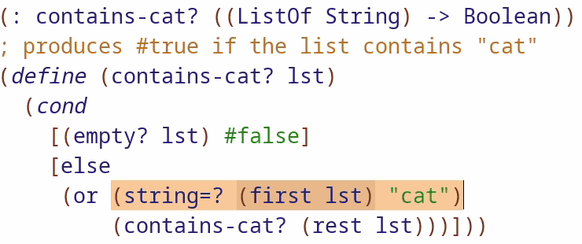

Abstraction
; Instead of calculating area of a circle for 5 and 10
(* pi 5 5)
(* pi 10 10)
; We can "abstract"(make more general) it with a function
; that factors out the difference
(: circle-area (Number -> Number))
; produces the area of a r radius circle
(define (circle-area r)
(* pi r r))
(circle-area 5)
(circle-area 10)#Similarities

(: contains-dog? ([ListOf String] -> Boolean))
; produces #true if the list contains "dog"
(check-expect (contains-dog? (list "cow" "dog")) #true)
(define (contains-dog? lst)
(cond
[(empty? lst) #false]
[else
(or (string=? (first lst) "dog")
(contains-dog? (rest lst)))]))
(: contains-cat? ([ListOf String] -> Boolean))
; produces #true if the list contains "cat"
(check-expect (contains-cat? (list "sheep" "cat")) #true)
(define (contains-cat? lst)
(cond
[(empty? lst) #false]
[else
(or (string=? (first lst) "cat")
(contains-cat? (rest lst)))]))Notice how the two functions above, contains-dog? and contains-cat? are 90% similar! The main difference is in:(string=? (first lst) "cat")(string=? (first lst) "dog")
#Abstract via Parameters
We fan factor out the string "cat" and "dog" into a parameter and implement contains-dog? and contains-cat? using a more general abstract contains? function.
(: contains-dog? ([ListOf String] -> Boolean))
; produces #true if the list contains "dog"
(check-expect (contains-dog? (list "cow" "dog")) #true)
(define (contains-dog? lst)
(contains? lst "dog"))
(: contains-cat? ([ListOf String] -> Boolean))
; produces #true if the list contains "cat"
(check-expect (contains-dog? (list "sheep" "cat")) #true)
(define (contains-cat? lst)
(contains? lst "cat"))
(: contains? ([ListOf String] String -> Boolean))
; produces #true if the given string is in the list
(define (contains? lst find-str)
(cond
[(empty? lst) #false]
[else
(or (string=? (first lst) find-str)
(contains? (rest lst)))]))This reduces bugs as we only need to look at contains? which holds the main logic and provides a more general useful function that’s able to look for any string in a list instead of just "cat" and "dog"
Exercise 1
(: add1* ([ListOf Number] -> [ListOf Number]))
; adds 1 to each item on lst
(check-expect (add1* (list 1 3 5)) (list 2 4 6))
(define (add1* lst)
(cond
[(empty? lst) empty]
[else
(cons
(add1 (first lst))
(add1* (rest lst)))]))
(: plus5 ([ListOf Number] -> [ListOf Number]))
(check-expect (plus5 (list 1 3 5)) (list 6 8 10))
; adds 5 to each item on lst
(define (plus5 lst)
(cond
[(empty? lst) empty]
[else
(cons
(+ (first lst) 5)
(plus5 (rest lst)))]))
; PROBLEM A: ABSTRACT add1* & plus5 into a new general abstract function
; TODO
; PROBLEM B: Reimplement the add1* & plus5 with the abstract function from PROBLEM A
; TODOAnswer
(: add1* ([ListOf Number] -> [ListOf Number]))
; adds 1 to each item on lst
(check-expect (add1* (list 1 3 5)) (list 2 4 6))
(define (add1* lst)
(add-n lst 1))
(: plus5 ([ListOf Number] -> [ListOf Number]))
(check-expect (plus5 (list 1 3 5)) (list 6 8 10))
; adds 5 to each item on lst
(define (plus5 lst)
(add-n lst 5))
; PROBLEM A: ABSTRACT add1* & plus5 into a new general abstract function
(: add-n ([ListOf Number] Number -> [ListOf Number]))
; adds-n to every number in lst
(define (add-n lst n)
(cond
[(empty? lst) empty]
[else
(cons
(+ n (first lst))
(add-n (rest lst) n))]))
; PROBLEM B: Reimplement the add1* & plus5 with the abstract function from PROBLEM A
; (done, see above)
#Recipe for Abstraction
- Compare two items for similarities in text and behavior
- Abstract! Replace the common inessential differences with new names and add these names to the parameter list.
- Rewrite your old function in terms of the new abstraction function, and validate tests
- Rewrite the signature for the new abstraction
When you abstract, you tend to write the signature last because it will be the hardest part, due to the signatures also needing to be more abstract(aka generic).
#Abstract via Function Parameters
; PROBLEM A: Write tests for "smaller-than" and "larger-than"
(: smaller-than ([ListOf Number] Number -> [ListOf Number]))
; keep only those numbers smaller than the given "limit"
; TODO TESTS
(define (smaller-than lst limit)
(cond
[(empty? lst) empty]
[else
(if (< (first lst) limit)
(cons (first lst) (smaller-than (rest lst) limit))
(smaller-than (rest lst) limit))]))
(: larger-than ([ListOf Number] Number -> [ListOf Number]))
; keep only those numbers biggers than the given "limit"
; TODO TESTS
(define (larger-than lst limit)
(cond
[(empty? lst) empty]
[else
(if (> (first lst) limit)
(cons (first lst) (larger-than (rest lst) limit))
(larger-than (rest lst) limit))]))
; PROBLEM B: Abstract "smaller-than" & "larger-than" with a NEW function, call it "extract"
; TODO
; PROBLEM C: Use the abstracted function from PROBLEM B to re-implement "smaller-than" & "larger-than"
; TODOAnswer
; PROBLEM A: Write tests for "smaller-than" and "larger-than"
(: smaller-than ([ListOf Number] Number -> [ListOf Number]))
; keep only those numbers smaller than the given "limit"
(check-expect (smaller-than (list 1 2 3 4) 3)
(list 1 2))
(define (smaller-than lst limit)
(cond
[(empty? lst) empty]
[else
(if (< (first lst) limit)
(cons (first lst) (smaller-than (rest lst) limit))
(smaller-than (rest lst) limit))]))
(: larger-than ([ListOf Number] Number -> [ListOf Number]))
; keep only those numbers biggers than the given "limit"
(check-expect (larger-than (list 1 2 3 4) 2)
(list 3 4))
(define (larger-than lst limit)
(cond
[(empty? lst) empty]
[else
(if (> (first lst) limit)
(cons (first lst) (larger-than (rest lst) limit))
(larger-than (rest lst) limit))]))
; PROBLEM B: Abstract "smaller-than" & "larger-than" with a NEW function, call it "extract"
(: extract ((Number Number -> Boolean) [ListOf Number] Number -> [ListOf Number]))
; extract numbers based on the given "fn" and limit
(define (extract fn lst limit)
(cond
[(empty? lst) empty]
[else
(if (fn (first lst) limit)
(cons (first lst) (extract fn (rest lst) limit))
(extract fn (rest lst) limit))]))
; PROBLEM C: Use the abstracted function from PROBLEM B to re-implement "smaller-than" & "larger-than"
(: smaller-thanv2 ([ListOf Number] Number -> [ListOf Number]))
; keep only those numbers smaller than the given "limit"
(check-expect (smaller-thanv2 (list 1 2 3 4) 3)
(list 1 2))
(define (smaller-thanv2 lst limit)
(extract < lst limit))
(: larger-thanv2 ([ListOf Number] Number -> [ListOf Number]))
; keep only those numbers biggers than the given "limit"
(check-expect (larger-thanv2 (list 1 2 3 4) 2)
(list 3 4))
(define (larger-thanv2 lst limit)
(extract > lst limit))
Yes! You can even pass in function just like you would any old data like booleans, strings, numbers, and this gives us a very powerful tool to abstract things!